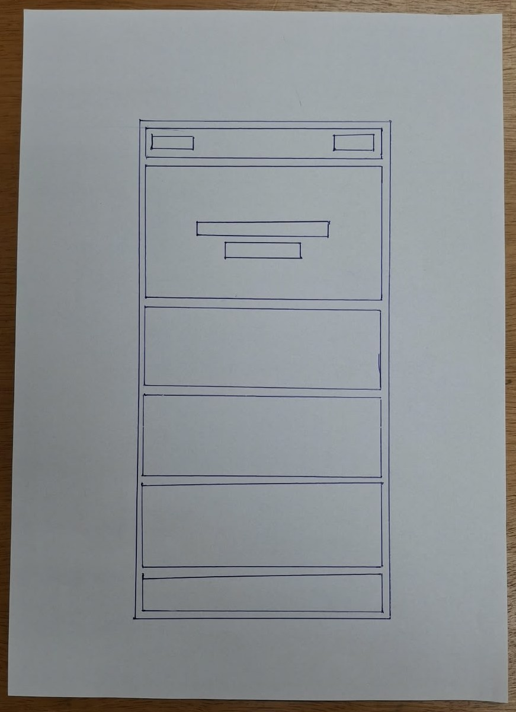
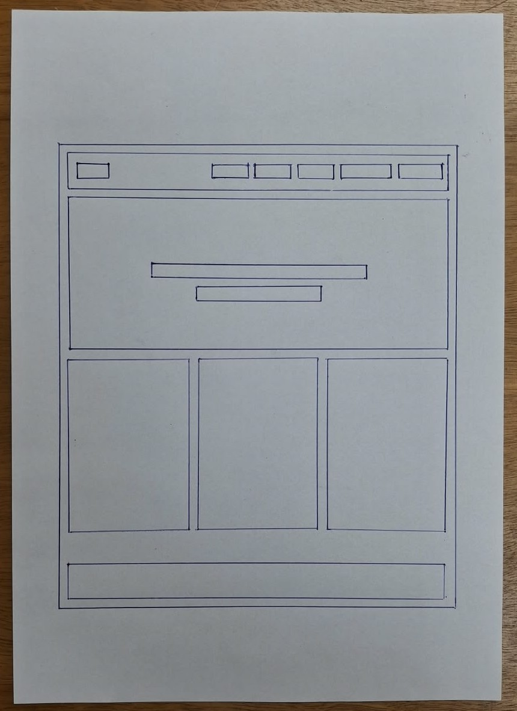

Nome do Site
Cantinho dos Jogos
Escolhi esse nome porque passa a ideia de um espaço aconchegante, convidativo, exatamente a sensação de sentar numa mesa com amigos pra jogar um jogo de tabuleiro. Disponibilidade de domínio (opcional): cantinhodosjogos.com.br
Finalidade do Site
O site funciona como um catálogo de jogos de tabuleiro, ajudando o visitante a descobrir e escolher o jogo certo pra cada ocasião. Ele lista informações como número de jogadores, tempo de partida, faixa etária e categoria de cada jogo, além de oferecer um formulário de contato para quem quiser sugerir um jogo ou tirar dúvidas.
Cenários
- Qual jogo de tabuleiro é bom pra jogar com a família toda, incluindo crianças pequenas?
- Quanto tempo dura, em média, uma partida de um jogo de estratégia mais pesado?
- Existe algum jogo cooperativo, onde todo mundo joga em equipe contra o próprio jogo?
Esquema de Cores
Paleta inspirada nas cores de caixas de jogos de tabuleiro clássicos: tons terrosos e quentes, com um fundo claro tipo papel.
Tipografia
Baloo 2 — usada nos títulos (h1, h2, h3), por ser arredondada e combinar com o clima leve/divertido de jogos.
Nunito Sans — usada no corpo do texto, por ser limpa e fácil de ler em blocos de descrição.
Wireframe
Esboços em preto e branco da página inicial, feitos à mão.

